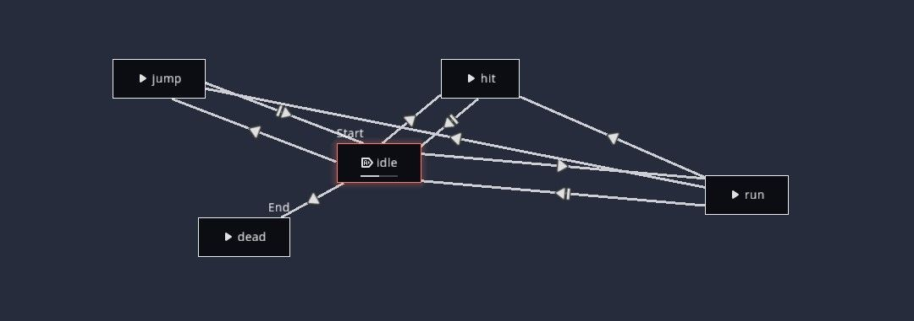
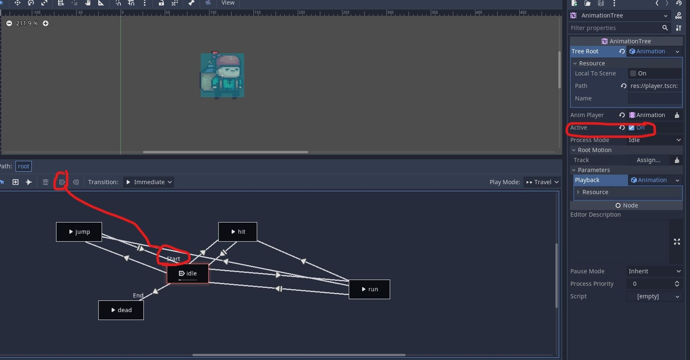

Godot Tips 'n Tricks 'n Gotchas

In this post I want to document all the useful tips and gotchas I found when using Godot. It's a living document, so will be updated regularly as I learn more
- Area vs StaticBody vs RigidBody vs Kinematic Body
- Animated Sprite vs Animation Player vs Animation Tree
- Layers and Layer Masks, and the Gotchas with them
Area vs StaticBody vs RigidBody vs Kinematic Body
The Area body is used when you want to detect when a body enters a region. Like a coin in a game-- you want to detect when the player collects it.
Use the Static Body for objects that will never move-- like the floor, walls etc.
Kinematic Body is used for objects you want to control directly-- as the player. For this, you provide input (via the keyboard, for example), and the player moves. Usually, you have to write some code on how the player will move, though Godot provides helpful functions.
The Rigid Body is used for bodies that are affected by physics-- you don't move these directly, but provide a force and Godot calculates the physics required to get it to move.
An example of this-- in a football game, the ball. When your player(which you control) kicks the ball, the ball will fly away. In this case, you will provide a force, but then Godot will calculate how high/far the ball flies based on the physics engine.
Another example is if your player throws a hand grenade, or if there are rocks in your way that bounce off as you hit them.
Vehicle Body
A Vehicle body is used in 3d games only, used for controlling cars. Surprisingly, it's a Rigidbody, not a Kinematicbody.
That's because you define the body of the car, the wheels, steering wheel etc, and then provide the force (acceleration). Godot then moves the car for you. This gives a very realistic game, as the car can skid around corners, take some time to accelerate from stopped etc.
But it also means extra complexity.
Animated Sprite vs Animation Player vs Animation Tree
I was always confused between these 3 players. The simple rule is: For simple animations, always use AnimatedSprite. It is really easy to create and use Animations with it.
As for when the others are needed, I'll tell you the problem I hit.
I had a game with stickmen and dozens of animations. Punch, kick, jump, jump kick, block, fall, die etc.
And the code to move between them got more and more complex. I would add some code and an animation would break. Or the animation would cut off-- like if I was doing a roundhouse kick and pressed punch, it would stop the kick animation and jump to punch, which isn't what I wanted. I wanted the current animation to be complete. So I added some code so the animation would always be complete.
But then I hit the problem-- if the enemy died while I was kicking him, the death animation wouldn't play, because, by the time the kick animation finished, the enemy had been deleted.
And so I was adding more and more code to cope with all situations. Till it became so painful I abandoned the project.
I had heard of Animation Player, but never understood why I would use it, as it's a lot more complex than Animated Sprite. Till I saw this video series: https://www.youtube.com/watch?v=KAZX4qfD06E and it showed me why to use Animation Player.
Basically, Animation Player and Animation Tree are used together. The player allows you to create animations, and in Animation Tree, you can set the transitions. Here is a sample from my code:

It shows the various animations I have-- like idle, hit, jump, and how I can move between them. We can define how to move, like should the current animation finish playing, or should we cut immediately?
The advantage of this approach is: Godot handles all the animations logic, and a lot of code is removed. And it makes testing the game a lot more pleasurable.
But Animation Player is more complex and takes time to setup properly. If you only have a few animations and simple transitions, then stick to AnimatedSprite. An example is a standard 2d platformer, where you have run, jump and maybe attack. In this case, I would just use AnimatedSprite.
Animation Player Gotchas
One problem with the animation player is: IT only works with sprite sheets (there are hacky youtube tutorials to get it working with individual sprites, but I had problems with them).
The problem is: When you download sprites, you may not always get them in a spritesheet. All the ones I'm using currently come as individual sprites.
Rather than trying to hack the player, I found it easy to just take the individual sprites and turn them into a sheet. There are multiple webapps online that will do it for free, as well as downloadable programs. I recommend TexturePacker-- its free version is good enough for majority of cases.
Another gotcha: The animation player has an is_playing() flag, but it only returns true if you manually stopped the animation!
I spent hours trying to find out why is_playing() was returning true when the animation had clearly finished.
If you to check a particular animation finished: Create a signal for animation_finished(), which you can see in the Nodes for the AnimationPlayer, and add a check. Some example code:
func _on_AnimatedSprite_animation_finished():
if ($AnimatedSprite.animation == "explode"):
print("emit signal bomb xploded")
emit_signal("bomb_exploded")
queue_free()
Animation Tree Gotchas
I was following an online example and kept hitting this error:
Can't travel to 'idle' if state machine is not playing. Maybe you need to enable Autoplay on Load for one of the nodes in your state machine or call .start() first?
Googling was no help. The solution, not always well documented, is:

Make sure the active flag is checked.
Also make sure you have a Start animation, which in the above is done by the red circled button on the left.
Layers and Layer Masks, and the Gotchas with them
Layers make sure we don't have situations like the enemy hitting a spike and then dying, or taking a coin and increasing our score. While we could write code for it, layers are easy, as they enforce separation for us.
The Layer defines which layer the object is on, while the mask defines which layers it can interact with.
So you can have a layer for players, enemies and objects (like coins). The layer mask will then define that the player can interact with the coin, but not the enemies.
The problem with layers and masks
The biggest problem with layers is that they are non-intuitive, or act in strange ways. For me, I found that 2 objects were on different layers would still interact in strange ways. So I spent 45 minutes debugging a problem where my game just froze. Everything was running, I could put prints and see the functions were being called, keyboard input was being processed, yet nothing was updating.
The problem was-- a spike was touching the ground layer, and this was killing the "player" so the game was continuously restarting. Even though I had the spike and ground on different layers, they would still "interact", causing my game to freeze.
Spent hours googling, till I found this video:
You don't have to watch the whole thing, I'll give you the tldw:
For things like coins, spikes etc, that the player can interact with but you don't want anything else to interact with, the video recommends not putting them on any layer, but only setting the layer mask.
Personally, this doesn't make any sense to me, but I guess this is how Godot works...
For examples, see this post in my series on building a 2d platformer: https://new.pythonforengineers.com/blog/setting-up-layers-and-masks-in-godot/
Recommendation: Don't wait till the end to add layers/masks, do it as early as possible, otherwise you might hit strange errors as I did.